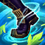
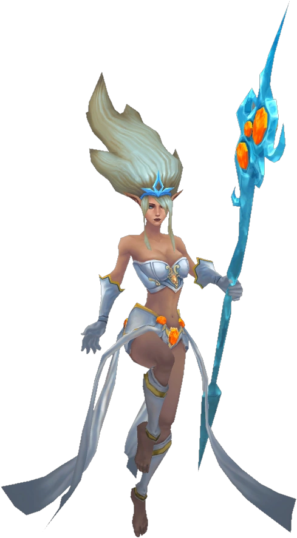

Janna
An ancient and mysterious wind spirit, Janna has come to protect the dispossessed of Zaun Crest icon Zaun. While her presence is most often felt as a soothing breeze or a ferocious tempest, she also can manifest in corporeal form as an ethereal figure, comforting the downtrodden. Over the eons, Janna has witnessed the rise and fall of civilizations. Through it all, she remains steadfast as a beacon of hope to those in need.

